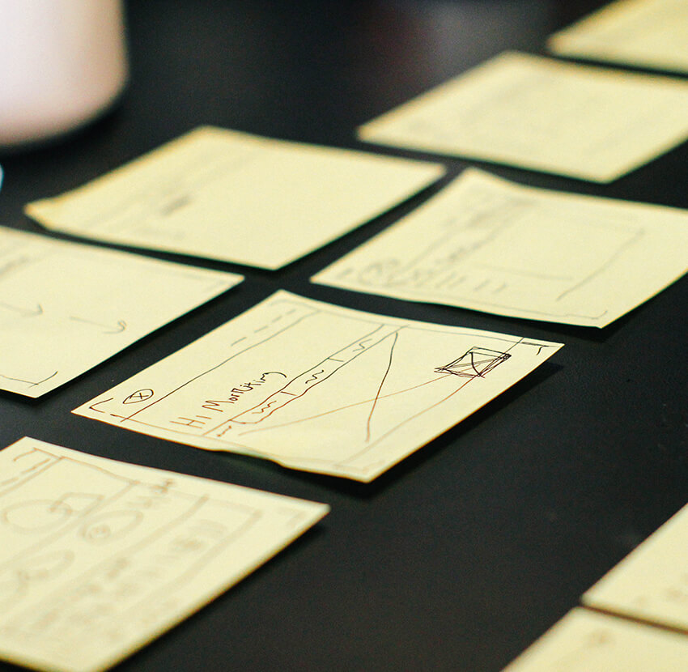
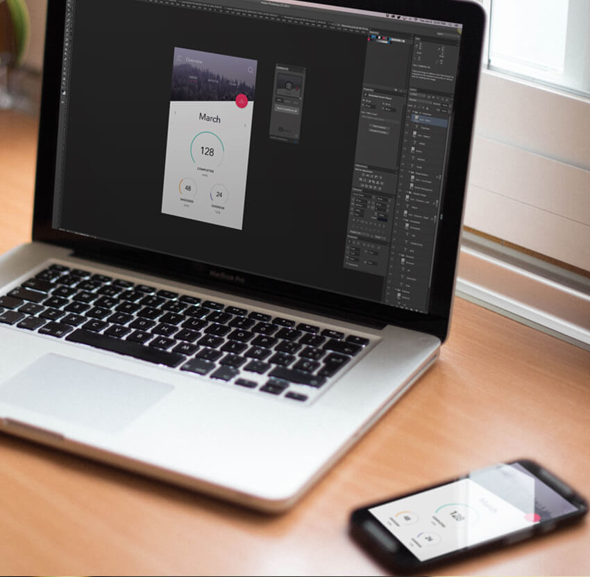

Es gibt meiner Meinung nach nichts wichtigeres im UX Design, als seine Ideen und Entwürfe einem UX Testing zu unterziehen. Wenn man nicht testet verliert man meistens Geld, sehr viel Geld. Meistens ohne es zu bemerken. Viele Gründer und Geschäftsführer wundern sich, warum das eigene Produkt nicht funktioniert und fummeln an vielen Stellschrauben, weil sie am Anfang den Schritt des UX Testings übersprungen haben. Ein fataler Fehler! Es gibt verschiedene Methoden und Phasen wie man seine Ideen testen kann und einige davon kosten einen überhaupt nichts, außer ein wenig Zeit. Ich möchte die verschiedenen Möglichkeiten kurz erläutern. Die ersten zwei Methoden erklären einfaches Prototyping, die dritte Methode dreht sich um Conversion Optimierung durch testen eines bestehenden Produktes:
Die einfachste und billigste Methode. Man braucht nur Papier, Stifte und evtl. eine Schere und Klebeband. Man bringt mit wenigen Strichen seine Ideen aufs Papier. Keine Details, einfach nur ein ganz grobes Wireframe bzw. eine einfache Skizze deiner App oder Website. Im besten Falle schneidet man sich das Papier so zurecht, dass der Prototyp am Ende eine realistische Größe hat. Zum Beispiel schneide ich einen App-Papier-Prototypen so aus, dass das Papier so groß ist wie ein Handybildschirm. Man zeichnet nun jeden Screen des Flows den man gerade testen will. Zum Beispiel beim Kauf des Produktes zuerst die Startseite, dann die Detailseite, dann den Warenkorb, Checkout usw. Dann nimmt man den Stapel Papier in die Hand und schaut ob die Größenverhältnisse angenehm mit dem Daumen erreichbar sind und ob der Flow sinn macht, wenn man ein Papier nach dem anderen durchgeht. Manchmal findet man hier schon grundlegende Fehler, bevor der Designer auch nur einen Pixel auf dem Computer geschubst hat. Mann kann sogar Dropdown- oder Offcanvas Menüs bauen, indem man sich teile mit Tesa an die Screens klebt, die man dann umklappen kann usw. Der Fantasie sind keine Grenzen gesetzt.
Es gibt mittlerweile viele Anbieter von Clickdummy bzw. Prototyping Tools. InVision und Marvel sind wohl die bekanntesten Vertreter. Mit denen es möglich ist, entweder Designs hochzuladen die man in einem Designtool wie Sketch erstellt hat, oder auch teilweise direkt in dem Tool Wireframes zu erstellen. Man hat dann verschiedene Screens, wo man Bereiche auswählen kann, auf die man klicken kann (z.B. einen Button) und dann den Screen auswählt, auf den man weitergeleitet werden soll. Durch diese relativ simple Mechanik lassen sich wahnsinnig komplexe Clickdummies/ Prototypen erstellen, die teilweise kaum noch vom Finalen Produkt zu unterscheiden sind. Je nachdem wie viel Mühe man sich gibt und wie detailliert die hochgeladenen Screens sind. Einige Anbieter bieten sogar die Möglichkeit, den Clickdummy auf ein mobiles Device zu installiere. Man kann dann mit dem Gerät ziemlich umfangreiche User Testings machen, indem man sich eine beliebige Anzahl von Testpersonen einlädt und den Prototypen mit jedem durchgeht und sich die Schwierigkeiten notiert. Wichtig ist natürlich, dass man die Testperson richtig anleitet. Die meisten Tools sind teilweise bis 3 Projekte kostenlos und selbst die Kosten für Premium Accounts halten sich in Grenzen.
Die folgende Methode empfiehlt sich, wenn man bereits ein Produkt hat, das Online ist. Aber auch bei diesen Produkten ist ein Testing unabdingbar und hat schon vielen Unternehmen einen unglaublichen Bosse gebracht. Wenn man bereits eine Website oder App hat, dann weiß man manchmal nicht was beim User gut ankommt und was nicht und ob eine bestimmte Veränderung gut oder schlecht wäre. Dafür gibt es A/B-und Multivarianten-Tests. Man meldet sich entweder bei einem Anbieter wie Optimizely oder Visual Website Optimizer an, oder nutzt das Testing von Google Analytics. Der Aufbau ist meistens gleich, aber man benötigt ein paar technische Kenntnisse, um das Tool zum laufen zu bringen. Man muss zum Beispiel einen Code Schnipsel ins HTML der Seite einfügen und ein paar Dinge im Tool selbst konfigurieren. In der Regel ist aber alles gut dokumentiert. Hat man alles zum laufen gekriegt, kann man nun entscheiden welches Feature man testen will. Man kann zum Beispiel die Buttonfarbe oder ein Bild testen. Wenn man die einfache Variante bevorzugt, dann macht man einen A/B test mit zwei Möglichkeiten, die gegeneinander laufen und mit Multivarianten Tests, kann man sehr viele Varianten gegeneinander testen. Nun zum eigentlichen Zauber: Die verschiedenen Varianten spielt man seinen echten Usern aus. Eine Gruppe kriegt die neue, die andere Gruppe kriegt die alte Version. Nun wird geschaut, ob Gruppe A oder Gruppe B, lieber auf den Button klickt. Also ist der blaue oder der grüne Button attraktiver, oder das Bild von der Katze oder der hübschen Dame? Es gibt viele erstaunliche Studien wo wahnsinnige Umsatzsteigerungen durch kleine Text oder Farbveränderungen erzeugt wurden. Natürlich ist diese letzte Variante etwas aufwändiger, aber wenn man etwas Routine hat, geht es sehr schnell so einen Test aufzusetzen. Die Anbieter haben verschiedene Tarife, aber für etwas gestandenere Firmen sollte das bezahlbar sein, vor allem vor dem Hintergrund, dass man am Ende eine dauerhafte Umsatzsteigerung bekommt.
Viel zu viele Unternehmen verzichten darauf, ihre Produkte ausgiebig zu testen, weil sie denken Tests seien immer aufwändig oder teuer. Dabei lassen sich schon mit einfachen und günstigen Methoden grobe Schnitzer vermeiden, die sich später nur schwer ausbügeln lassen. Testen lohnt immer, auch wenn man etwas Zeit dafür investieren muss.